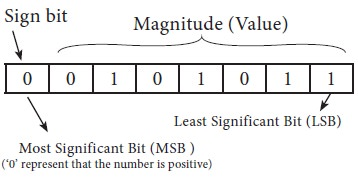

| Number system | Digits | Base | Examples | Conversion to Decimal |
|---|---|---|---|---|
| Decimal Number System | 0-9 (10) | Base 10 | 12.5 | (1*10^1)+ (2*10^0)+ (5*10^-1) = 12.5 |
| Binary Number System | 1 & 0 (2) | Base 2 | 100 | (1*2^2)+ (0*2^1)+ (0*2^0) = 4 |
| Octal Number System | 0-7 (8) | Base 8 | 12570 | (1 x 84) + (2 x 83) + (5 x 82) + (7 x 81) + (0 x 80) |
| Hexa Decimal Number System | 0-9 & A-F (16) | Base 16 | 19FDE | (1 x 164) + (9 x 163) + (F x 162) + (D x 161) + (E x 160) (NB: A=10, B=11, C=12, D=13, E=14, F=15) |
In mathematics and digital electronics, a binary number is a number expressed in the base-2
numeral system or binary numeral system, which uses only two symbols: typically "0" (zero) and
"1" (one).
The base-2 numeral system is a positional notation with a radix of 2. Each digit is referred to
as a bit. Because of its straightforward implementation in digital electronic circuitry using
logic gates, the binary system is used by almost all modern computers and computer-based
devices.
The representation of a signed binary number is commonly referred to as the sign-magnitude notation and if the sign bit is “0”, the number is positive. If the sign bit is “1”, then the number is negative. When dealing with binary arithmetic operations, it is more convenient to use the complement of the negative number.

1’s complement of a binary number is another binary number obtained by toggling all bits in
it,
i.e., transforming the 0 bit to 1 and the 1 bit to 0.
Examples:
Let numbers be stored using 4 bits
1's complement of 7 (0111) is 8 (1000)
1's complement of 12 (1100) is 3 (0011)
2’s complement of a binary number is 1 added to the 1’s complement of the binary number.
Examples:
Let numbers be stored using 4 bits
2's complement of 7 (0111) is 9 (1001)
2's complement of 12 (1100) is 4 (0100)
These representations are used for signed numbers.
| One's Complement | Two's Complement |
|---|---|
| two representations of 0 | only one representation for zero |
| It cane be easily obtained using an inverter | It has to be arrived at by first obtaining the 1's complement and then adding one to it. |
| It requires two operations | Only one arithmetic operation is required |
| It is often used in logical manipulations for inversion operation | It is used only for arithmetic applications |
Logic gates are the basic building blocks of any digital system. It is an electronic circuit having one or more than one input and only one output. The relationship between the input and the output is based on a certain logic. Based on this, logic gates are named as AND gate, OR gate, NOT gate etc.